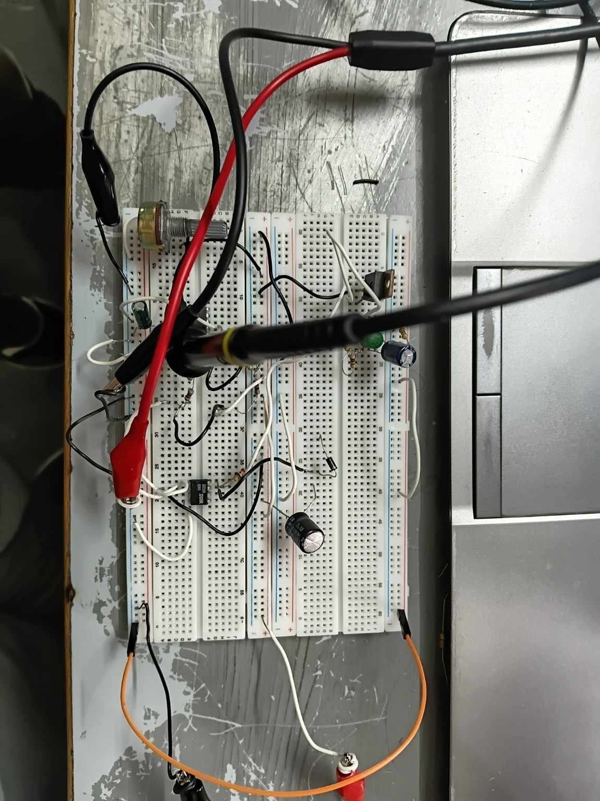
Bench photographyElectronics Bench Testing
Breadboard assembly, measurement instruments and a captured oscilloscope waveform.
Explore 3 photographs →Electrical Engineering student at NUST (expected 2027). My work connects embedded firmware, board design, and sensor data with tools people can use.
Electrical engineering student building systems from hardware up.

I am a B.E. Electrical Engineering student at NUST, with expected graduation in 2027. My project work connects embedded firmware, circuit and PCB design, and IoT telemetry. This portfolio focuses on documented engineering work, with software and AI projects available in the wider archive.
Projects in Archive
Electrical Engineering
Expected Graduation
My professional journey and hands-on training.
Tools used across projects, coursework and training; project case studies show the supporting evidence.
Six selected projects across embedded systems, PCB design, controls, and RF. Visit the archive for more projects, reports, and simulations.
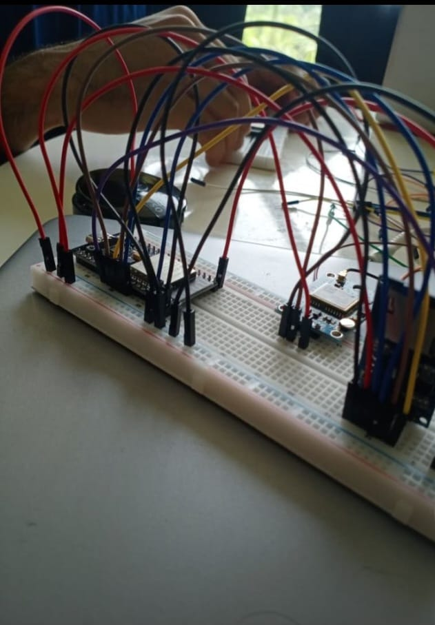
Hardware prototypeIntegrated GPS, RFID and cellular MQTT on ESP32; built telemetry processing and Flask/SQL Server operator tools within the internship team.
My contribution: Integrated GPS, RFID and cellular MQTT on ESP32; built telemetry processing and Flask/SQL Server operator tools within the internship team.
Status: Documented internship prototype
Evidence & limits: The report and original bench photos document device integration and the sensor-to-dashboard workflow. Fleet-scale reliability, latency and GPS accuracy are not established here.
 Proteus simulation
Proteus simulation
Modeled a DC motor feedback loop and documented an Arduino Uno, L298N and encoder interface in Proteus. The report lists 6% overshoot for the Simulink model.
The firmware listing uses an encoder-driven simulated RPM value. Bench-measured tracking and load response are not established.
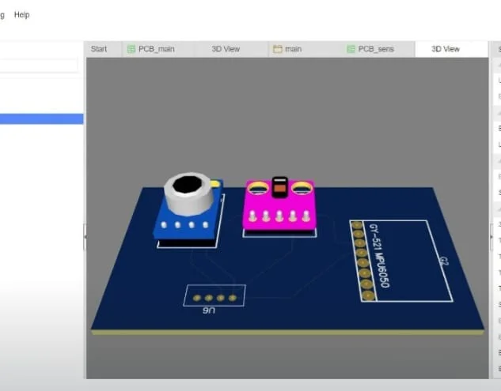
PCB renderCreated EasyEDA schematics, board layouts and 3D views for separate ESP32 main and I2C sensor boards.
My contribution: Created EasyEDA schematics, board layouts and 3D views for separate ESP32 main and I2C sensor boards.
Status: PCB design archive; hardware validation pending
Evidence & limits: The available design views document board layout and component placement. Fabrication, board bring-up, noise reduction and sensor accuracy have not been verified.
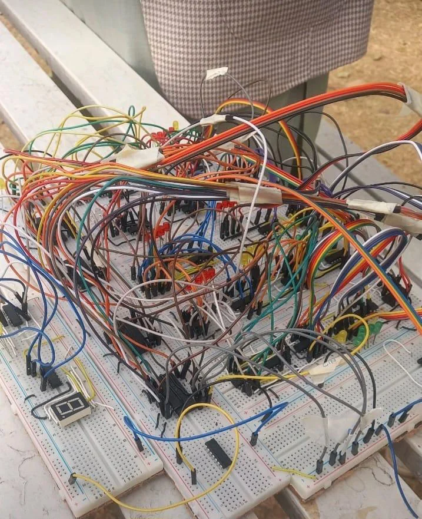
Hardware prototypeDesigned arithmetic and logic operations with function selection and assembled the documented discrete-logic breadboard implementation.
My contribution: Designed arithmetic and logic operations with function selection and assembled the documented discrete-logic breadboard implementation.
Status: Documented digital logic build
Evidence & limits: The report and project images show the ALU implementation. An independently reproduced exhaustive truth-table test log is not included.
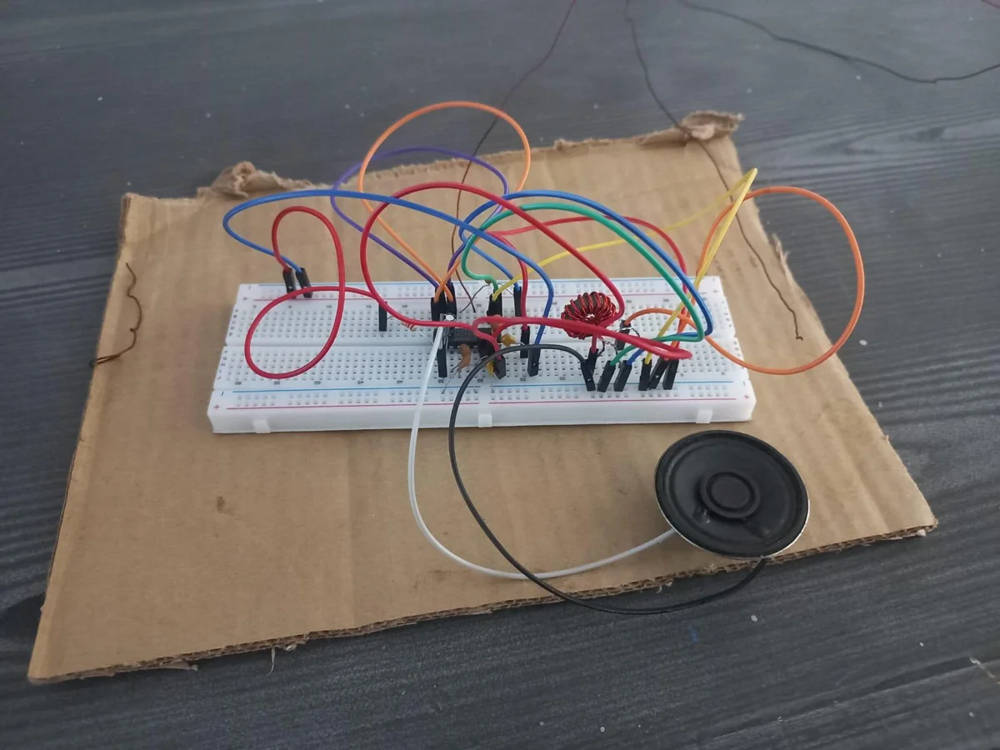
Hardware prototypeWorked through receiver block design, tuning-component selection, demodulation simulation and the documented physical circuit.
My contribution: Worked through receiver block design, tuning-component selection, demodulation simulation and the documented physical circuit.
Status: Documented receiver project
Evidence & limits: The report covers simulation and the receiver build. Calibrated sensitivity, selectivity and signal-to-noise measurements are not published.
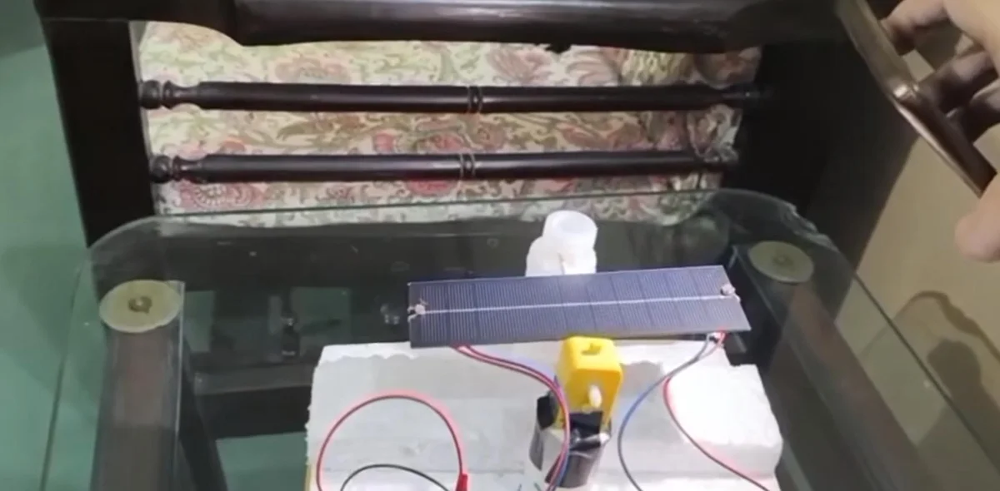
Hardware prototypeDual-axis solar tracking system in Proteus using LDR-based differential light sensing to determine the direction of strongest sunlight. Two servo motors adjust azimuth and elevation in a…
Dual-axis solar tracking system in Proteus using LDR-based differential light sensing to determine the direction of strongest sunlight. Two servo motors adjust azimuth and elevation in a closed feedback loop to maximize irradiance capture throughout the day.
Hardware notebook
Bench photographs and PCB renders. Explore the setup and design views alongside the documented projects below.

Bench photographyBreadboard assembly, measurement instruments and a captured oscilloscope waveform.
Explore 3 photographs →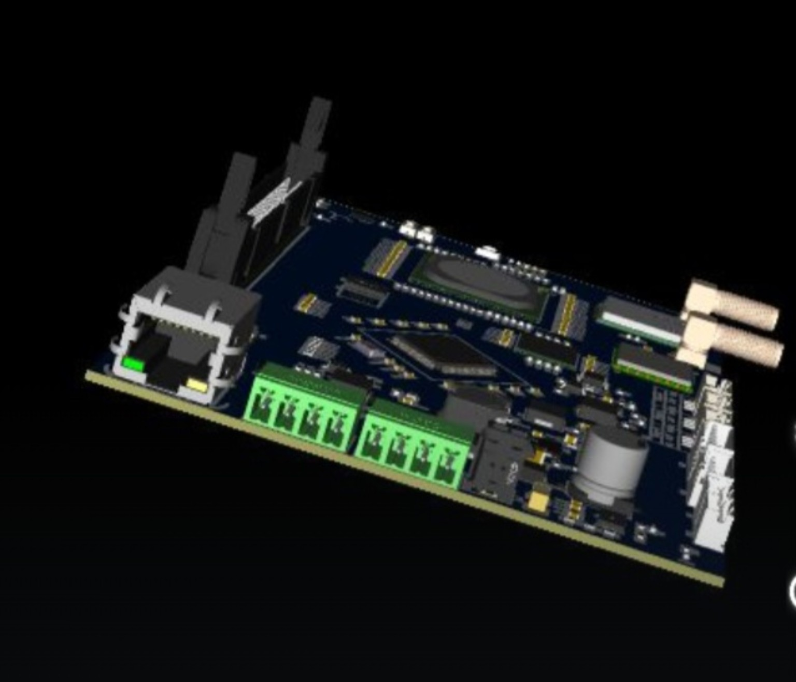
3D PCB renderTop and perspective views of the board layout. These are renders, not photographs of fabricated hardware.
Explore 2 design views →Open a card to view its certificate image or issuer details.
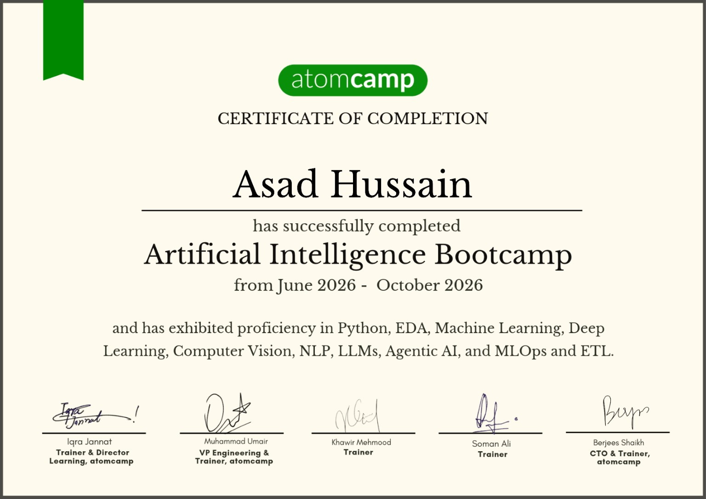
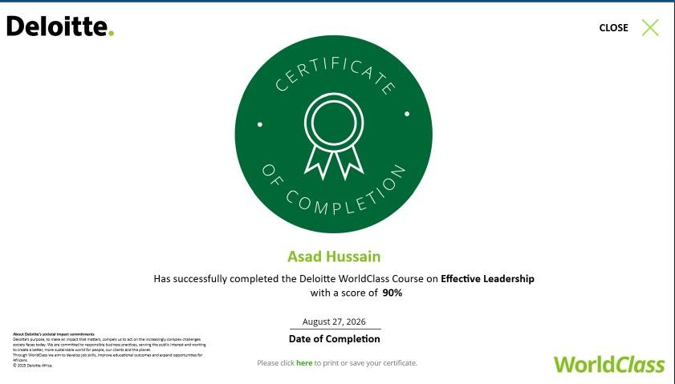
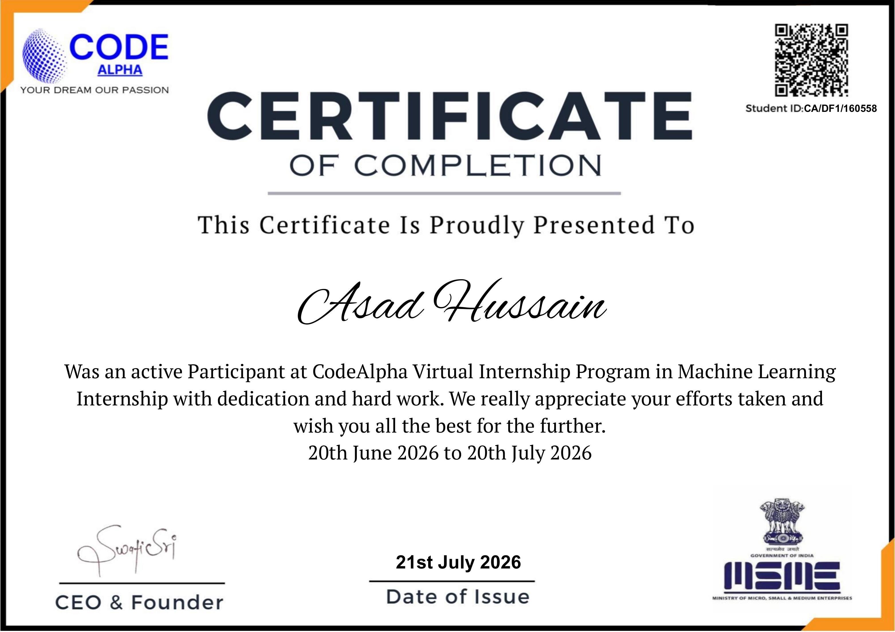
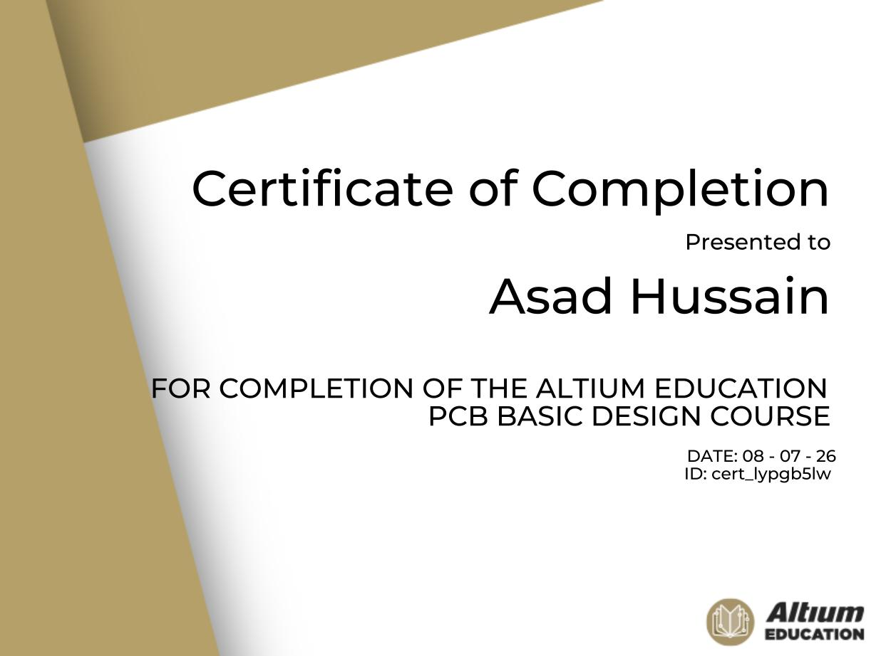
Building practical AI, machine-learning, and automation skills at NSTP Islamabad.
atomcamp · National Science & Technology Park (NSTP), Islamabad
June–October 2026
Completed practical training in Python, exploratory data analysis, machine learning, deep learning, computer vision, NLP, LLMs, agentic AI, MLOps, and ETL.
Applied these skills through project work involving AI models, automation workflows, and software delivery practices.
View CertificateBuilding, learning, and contributing alongside fellow engineers.
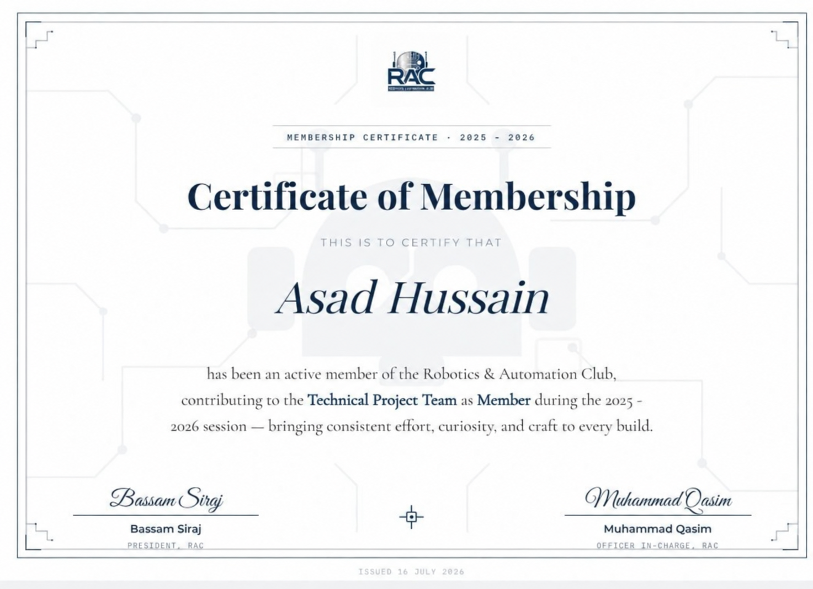
Member · Technical Project Team
Session: 2025–2026
Active member of the Technical Project Team, contributing to the club’s technical builds through consistent effort, curiosity, and collaboration.
Asad exhibited excellent performance during his internship and made a valuable contribution to our organization. He has excellent analytical skills, quickly acquired new skills, and adeptly adapted to emerging technologies. His dedication and skills make him a valuable asset to any prospective employer.
Asad completed our Backend AI Engineering internship track with a strong, verified record: 27 completed assignments spanning API design, prompting, retrieval, and evaluation, plus an accepted capstone project. His participation, work quality, and professionalism were all confirmed through our formal program review. I recommend him for opportunities in back-end engineering and applied AI systems.
Let's build something amazing together.
I'm currently open to internship opportunities, freelance projects, and collaborations. Whether you have a question or just want to say hi, I'll try my best to get back to you!
Islamabad, Pakistan
Open for Opportunities